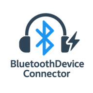

奶油黄白界面 · 三态托盘图标
Apple 风的克制质感，托盘图标会替你「看脸色」。

可爱脸 · 未连接
安静的圆脸等着你翻牌
加油脸 · 旋转弧 · 连接中
正在牵线，马上就好
心动脸 + 绿环 · 已连接
耳机在线，音乐开响 🎧
↑ 图标为应用内置原图，以上就是全部三种状态

给 Windows 的一口甜：点一下，AirPods 就连上。
v1.8.4 · 2026-08-25 发布 · 解压即用，耳机配对过一次就行
iPhone 连 AirPods：开盖弹窗点一下。Windows：没有弹窗，每次都要翻设置。
| Windows 原生 | AirPods 小助手 | |
|---|---|---|
| 连接 | 设置 → 蓝牙 → 找设备 → 点连接（4~5 步） | 单击托盘图标 / 点一下大圆钮（1 步） |
| 多副耳机 | 每次自己找哪个是哪个 | 按你的优先级自动挑（▲▼ 排序） |
| 断开 | 再进设置点断开 | 右键托盘 → 一键断开全部 |
| 音质 | 容易连成低音质通话模式 | 默认 A2DP+HFP 完整模式 |
| 常驻 | 无 | 托盘常驻 + 开机自启 |
下面是应用里真实的精灵图动画——桌面级透明、逐帧手绘，等待、撒花、拜拜样样都会。
Apple 风的克制质感，托盘图标会替你「看脸色」。
安静的圆脸等着你翻牌
正在牵线，马上就好
耳机在线，音乐开响 🎧
↑ 图标为应用内置原图，以上就是全部三种状态
不上传任何数据，唯一网络行为是检查新版本。
左键单击托盘直接切换；界面大圆钮一点即连。
苹果设备默认排前，其他耳机不捣乱，▲▼ 随心调序。
连接时从右下角弹出，全帧动画陪你等，连上撒 💕。
奶油黄白+蜂蜜金，macOS 级克制质感，长名字优雅截断。
不联网上传任何数据，日志全记在本地可审计。
有新版弹窗一键升级；缺 WebView2 运行时会自动装好。
一个 3.4MB 的 zip，GitHub 直链
免安装，即刻常驻托盘
从此告别翻设置
觉得好用的话，去 GitHub 给个 ⭐ star 呗，这对捞鱼很有帮助 🥺